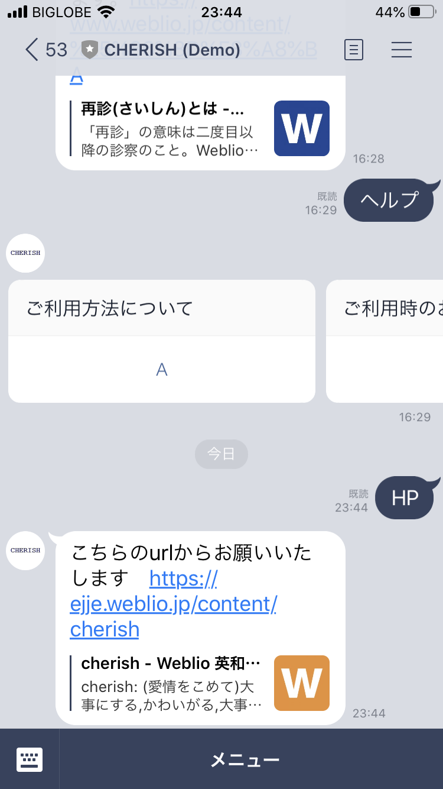
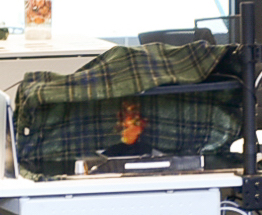
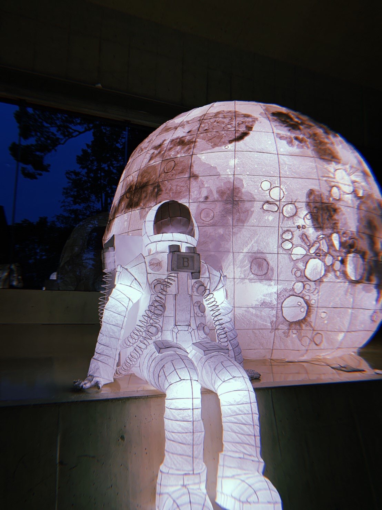
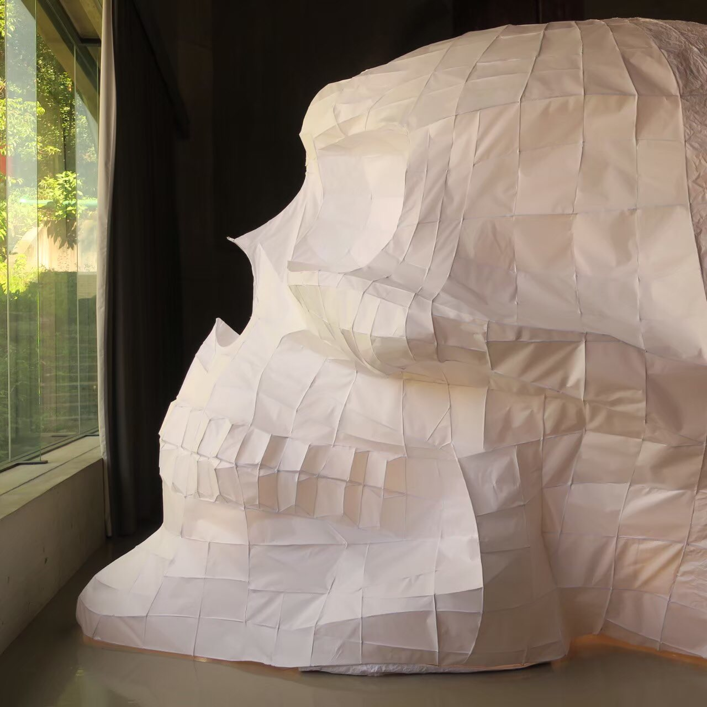

その他
line botの作成
ピル普及のためのラインボットを作った
その1 http://nav.cx/6Mqmoif
その2 http://nav.cx/5k9urU0
頑張った
API関連の勉強にもなったしチーム制作の良い経験にもなったので、まあよかった。
展覧会
火のホログラムっぽいやつ
ソフトウェアの授業で作ったやつの延長線上でほろぐらむっぽいやつを作った。
火そのものを改良したり息を吹きかけると灰が舞い上がるようにした。
結構簡単にそれっぽい物が作れたので何かに応用出来そう。
全体を見たときけっこう浮いていたので、見た目をもうちょっと丁寧につくればよかった。
動画とかちゃんと残しておけば良かった；；
ドローイングオートマトン
素材学のやつ
プリンターを分解してオートマトンを作った。
思っていたよりえげつない見た目のものができたが、それも含めて満足。
VRワールド
筋トレ用
腕立て伏せ用のWEBで動くVRワールドを作った。
center of viewの文字が真ん中に来るまで上体を起こす
aframeを使っての開発だったがワールドを作ること事態はわりと簡単だった
ゲーム制作
プリンのホラゲへの道
プリンのホラゲの作成
チームでのゲーム制作に取り組んでみた
僕が担当したのはゲームの流れの作成と全体の統合。それとUE4を使ってのノードプログラミングに取り組んだ
デジタルゲームを作ってみたかったので実際作ってみれたのはけっこう大きかったかな
粗がけっこう目立つから時間を見つけて修正して、あわよくば公開できるレベルまで作りたいな
ねぶた作成
アポロ11号
 成功の裏にある失敗がモチーフの作品
40人程の規模での制作だった。まあなんやかんやあったが楽しかったと思う（死ぬほど疲れたが）
ねぶたを光らせる際の電球の配置を考え、設置するチームのリーダーを担当した
かつかつなスケジュールの中よくやったと思いたい
作ってるなかでリスペクトできる人がけっこう居たのもよかった